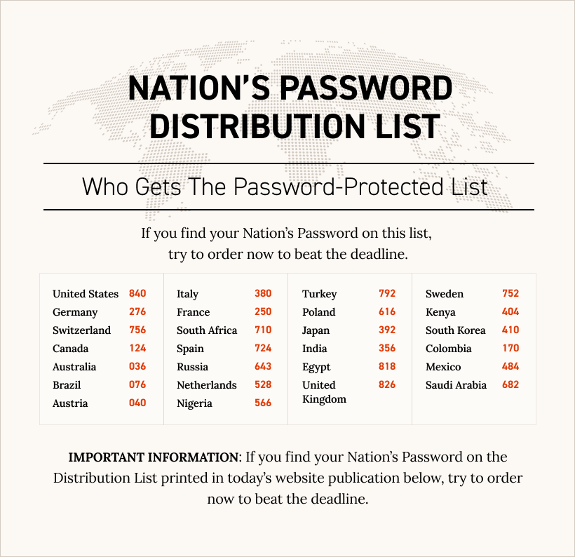

“Work From Home” Millionaire’sDecision To Retire Puts His Password - Decision To Retire Puts His Password - Protected List Of “77 Impulse Words” - The Real Secret That Made Him Rich - Up For Grabs
National Password Determines Who Gets Them
Password-Protected List Of “Impulse Words” that made Jason Capital
rich are up for grabs as thousands stand to miss the deadline to grab
the real secret that made Jason Capital rich; now residents in 26
nations can grab the password-protected list for themselves just by
finding their Nation’s Password below and covering the one-time fee
before the deadline ends.
“We’re running out of passwords,” said Zack Zeller, Chief Executive
Officer. That’s because Jason’s decided to go out with a bang.
Now that he’s retired from teaching, he’s handing over his
Password-Protected List of “77 Impulse Words” that make buyers buy -
the real secret that made him rich - to viewers who find their
Nation’s Password on the Distribution List now before all the
passwords are gone.
PASSWORD-PROTECTED
“This is the one secret Jason swore he would keep under wraps forever.
The one (and only) secret he adamantly would not share. The approach
he relied on to win the bulk of his fortune. Deliberately omitted from
the 20+ books and programs he’s created. Born out of a private Miami
Think-Tank. This list of words has personally made Jason over $2
Million Dollars per year since 2013. All that time the secret at the
heart of Jason’s success remained private, exploited by one man only.
Here - at last - is the real secret that made Jason Capital rich,”
said Zeller.
Impulse Words: The Psychological Loophole That Makes Buyers Buy
“But it’s not about intelligence or experience. Humans have an IMPULSE
to BUY things. Just like breathing and eating, this IMPULSE to BUY is
an urge present within every one of us. Making money online is all
about knowing the exact right words to trigger this impulse. So the
real secret to earning a full-time income from home is focusing on
Impulse Words. These are innocent everyday words first studied by the
CIA that fly under-the-radar and tell you exactly what to type to
trigger this IMPULSE to BUY causing buyers to decide to buy in just
seconds. It’s not how smart or experienced you are. The most critical
factor is knowing exactly what to type in every situation,” said
Zeller.
They Laughed When He Dropped Out… Now He’s Retiring At 33.
How much can someone make with Jason’s Password-Protected List? It’s
hard to say. “The answer is there’s no way to tell. Everyone’s
different. But we do know this. Jason was laughed at when he dropped
out of college. Now these words have personally made Jason over $2
Million Dollars per year for 8 consecutive years. In 5 diverse
industries. He’s got 4 homes now. Stocks, crypto, investments. Free
time. And over 300 beginners using only a tiny sample of these Impulse
Words are now earning a full-time income from home,” said Zeller.
The Miami Think-Tank Unlocked The Secret..
The Password-Protected List of Impulse Words was developed in 2013 by
a think-tank of leading entrepreneurs and psychologists led by Jason.
All 11 members of that think-tank have kept the Password-Protected
List hush-hush. They’ve quietly used it to make millions from home.
A Real Steal
“Every think-tank attendee is now a multimillionaire. Combined,
they’ve made over $400 Million Dollars in 8 years. A few of these
Impulse Words are even sprinkled in this article you’re reading now.
So you better believe at just $77, this Password-Protected List and
all the brand-new and unreleased materials that come with it are a
steal,” said Zeller.
The only thing viewers who find their Nation’s Password listed below
need to do is cover the one-time fee now before the remaining
passwords are gone. Jason’s team has minted 21,000 passwords - more
than half are now gone. No more will be minted after that.
Find Your Nation’s Password: Only Viewers Who Find Their Nation’s
Password And Beat The Deadline Get One-Time $77 Fee; All Others Must
Pay $239 Fee
This is very important. The fee for viewers who do not find their
Nation’s Password on the Distribution List has been set to $239. But
for viewers who find their Nation’s Password and beat the deadline the
fee is just $77 one-time as long as they order before the deadline
ends.
“Remember this. We cannot stop viewers from buying up all the
remaining passwords. And you better believe with Jason Capital finally
sharing the real secret that made him rich all these years, we’re
guessing they’re going to go quick,” said Zeller. “
Viewers Rush To Snap Up Jason Capital’s Password-Protected List Of “77
Impulse Words”; The Real Secret That Made Him Rich
This website opened for orders at precisely 8:30 AM this morning. And
here’s the good news. Since the announcement, orders have been ringing
off the hook from viewers ready to cash in. That’s why viewers who
find their Nation’s Password on the Distribution List today are being
urged to order.
“Residents who want to cash in on Jason’s decision to retire better
hurry. That’s because after the last Password is claimed, no more new
Passwords will be minted. And no one will ever again be able to access
Jason’s Password-Protected List,” Zeller said.
Included with every order is Jason’s complete system for earning a
full-time income from home, sent to your inbox immediately. “Over
7,000 people paid $997 for this system. Why did Jason insist on this
extra gift? Simply because since he retired, he’s had a genuine
interest in sharing every secret he’s ever learned about earning a
full-time income from home and seeing you apply them correctly. I
guess it’s called going out in style,” Zeller said.
Who Gets The Password-Protected List:
Click Here To Find Your Nation’s Password
On The Distribution List
Thousands of viewers stand to miss the deadline to claim the
Password-Protected List of Impulse Words that made Jason Capital rich.
“We’re bracing for all the orders and we’re doing the best we can, but
we’re running out of passwords. Viewers who find their Nation’s
Password listed on the Distribution List need to order,” Zeller said.
Beat The Deadline:
Click Here To Find Your Nation’s Password
On The Distribution List

And now, an open letter from Jason Capital about his retirement..
An Open Letter To Everyone Who Secretly Believes Make Money Courses
Are Garbage!
From: Jason Capital
Time: 2:41 PM
Subject: Why I’m Calling It Quits
This letter will make you angry. Promise me you won’t throw your
computer through a window.
What I have to tell you involves a scandal that’s going on in the
“make money” industry today. It’s a scandal that - if you’re like most
people I know - is cheating you out of making money online and
(worse!) robbing you of extra income that should have hit your bank
account last month. And this month. And next month too.
It’s a mess. If you’ve ever bought a “make money” course - or have
ever thought about buying one - then you need to hear everything I’m
going to share with you. It’s that important. Now, maybe I need to
remind you who I am. It may help you understand why I’m sharing the
wild story I’m about to tell you. This is me with my dog Sterling
(PIC). I’m a guy who makes money online.
I dropped out of college because I was making $20K/mo from my dorm. My
professors laughed at me. Then I became a millionaire at 24 and they
stopped laughing. I’ve sold over $67 Million Dollars online. I’ve
spent $3.3 million on ads in total.
Behind the scenes, I’ve been sought out for marketing advice by some
amazing people - Jay Shetty’s team, Robert Kiyosaki’s team (Rich Dad,
Poor Dad), Jordan Belfort’s team (Wolf of Wall St) to name a few.
Then..
I wrote a book called Higher Status that became a best-seller on
Amazon. And lately..
I’ve spent the last few years teaching others how to earn a real
income from home too - I have over 300 students successfully earning a
full-time income from home now (over 20 of them now have 7-figure
businesses). But..
I made millions of dollars in 4 different niches before I ever got
paid to teach others how to make money online. The truth is, I started
making money online in a strange way..
I Made My First Dollar Online On NO SLEEP.
This is no joke. Here’s what happened.
My first ever website was set to launch Tuesday. But by Monday, my
website wasn’t ready. My programmer was asleep in the Philippines and
I couldn’t reach him.
If the site wasn’t ready, I’d be screwed because I’d already paid for
the traffic that was coming. He was the only one that could fix the
site.
So I stayed up all night in my dorm.
My friends partied while I sat in my room and waited.
I messaged the programmer every 30 minutes. For 9 hours.
Finally, at 6AM he replied and fixed the site.
By 9AM, I’d made my first sale (!).
By the end of the first week, I’d made almost $20,000. I spent it all
on an Audi convertible. My parents were in disbelief. My friends asked
if I’d become a drug dealer.
I’d go on to sell over $67,000,000 online over the next 13 years.
Somehow near the end, people began calling me a “make money guru”.
I never liked that title. Because I’m not a guru and I don’t have all
the answers.
I worry about bills.
Sometimes I feel stuck.
Sometimes I fantasize about packing up all my shit and moving to Bali
or Thailand by myself. Just enjoy life as a beach bum. I’d lounge
around the beach during the day and party til sunrise, then do it
again tomorrow.
This Letter Took Me 13 Years To Write You
I’m telling you this because sometime in 2020-21 I started to feel
burnt out.
I’d grown tired of teaching others how to make money online. I’m sorry
but this industry just doesn’t “do it” for me.
Maybe it sounds selfish. But I like making myself money a lot more
..than teaching others how.
That’s why I’ve always had online businesses outside of the ones you
see. I wanted to focus more on those.
So in October, I stepped down as CEO of my education company. With 44
team members and $250,000 a month in expenses, I put a team in charge
to lead the company.
My plan was to step away slowly so I could focus on my other ventures.
Then Instagram slapped me.
Man Plans, Instagram Laughs
On December 8th 2021, my Instagram account (with 2.5 Million
Followers) was banned without warning.
Now I had a real problem. Most of the revenue came from Instagram.
How could I afford to pay $250,000/mo in payroll and expenses without
new money coming in? I couldn’t. Instagram forced my hand.
So on Christmas Day, I made the impossible decision to shut my
education company down and let everyone go. (It was a depressing
holiday season for me.)
I’m officially retiring from teaching others how to make money online
- calling it quits.
Oh, you’ll still see me. But any content I make will be VERY different
going forward - I’m officially taking all my secret to making money
online and keeping it for me.
But here’s the good news. I’ve decided to go out with a bang.
Since I’m retiring, I can finally share the actual secret that made me
rich.
The secret I couldn’t reveal publicly when I was still teaching.
The approach I’ve relied on for 13 years to sell over $67,000,000
online.
Deliberately omitted from the 20+ books and programs I’ve created.
This list of words have personally made me over $2 Million Dollars
yearly since 2013.
The secret at the heart of my financial success which has remained
private all this time.
There are a few of us in possession of this secret. But I’m the only
one sharing it.
The term “fake guru” has become a hot term online.
They call these gurus “fake” because they say these fake gurus only
make money selling “make money courses”.
Now I’m not defending these people.
There are tons of hucksters out there. People who have never made a
penny outside of selling “make money courses”. (Remember - I made
millions in the basketball industry, the speed training industry, the
dating industry and the personal development industry before I ever
taught others how to make money online.) But I want you to open your
mind for a second and realize.
Fake or not, these “gurus” are still making money online. Many are
millionaires. And they’re all doing it using the same secret. A secret
that works for ethical and unethical people both.
In fact, nearly everyone who makes money online - from fake guru to
Jeff Bezos - uses this same secret to make money online. And here’s
where you should get angry - THEY NEVER TEACH YOU THIS SECRET.
They’ll teach you anything else but this. Because this is how they
really make their money.
Listen. Humans have an impulse to buy things. We even have a name for
it. An “impulse buy”.
Just like breathing and eating, this impulse to buy is present within
everyone one of us. And making money online is all about knowing the
exact right words that trigger this impulse.
The real secret to making money online is using Impulse Words.
Impulse Words are innocent everyday words that slip under the radar
and trigger this impulse to buy causing buyers to decide to buy
sometimes in just seconds.
These words have been studied by the CIA and every other intelligence
agency on the planet.
A few of them are even being used in this letter right now. But..
...Anyone Who Knows Them Won’t Dare Talk About Them.
They’re “too good to share”.
Making money online is not about how smart or experienced you are. You
have to know the exact right words to type - Impulse Words - the real
secret that made me rich all these years.
I’ve often been asked how I’ve been able to turn a profit in so many
different niches.
I started in the basketball niche. Then speed training. Then dating.
Then personal development. Then finally. How to make money online.
Until recently, I’ve never revealed the secret. Why should I when I’m
already competing against the biggest sharks online?
But it all changed recently when I finally felt secure enough (aka
rich enough) to reveal my secret privately.
I minted Passwords for a test group of beginners to access my
Password-Protected List of 77 Impulse Words.
To Get Access, Their Fee Was $2,800 Per Password.
Suddenly I found myself tasked with teaching my system to a bunch of
newbies.
Using Impulse Words is an art and a science. But I quickly concluded I
couldn’t teach an art - it’s too subjective.
I realized I had to turn Impulse Words into a science. They had to be
a repeatable set of principles that, if followed, can be counted on to
yield the same predictable result of profit and sales.
So I systematized the process and, most importantly, made everything
as easy as I could possibly make it… so even a freshman in college
could learn the system and start earning extra income virtually out of
the gate.
This is exactly what happened with my private test group.
In just 7 weeks, more than 90% of the students had made their first
sale online.
Many went on to become household names themselves.
Sean Ferres, millionaire
Paul Tancredi, millionaire
Chris and Andrew, millionaire’s
Eric Cipolla, 2 porsches
Wojo, the mclaren millionaire
No, not all of the students in my private group made money.
About 10% of the students couldn’t “get it”.
Others tried to use my 77 Impulse Words to sell new products that had
little market appeal.
We learned when a new product is so flawed that only a few people want
it, even the most powerful Impulse Words won’t sell it.
But with products or services that had market appeal, where the only
variable was the pulling power of our advertising, we almost never
lost.
All thanks to a system of Impulse Words made easy to use and apply.
And that’s how I’ve always approached making money online - how can we
make it easier?
The result of all this will be my final legacy teaching others how to
actually make money online..
…for everyone who’s ready to start earning a full-time income from
home …or more.
Today you can join the other students and claim your Password to my
Password-Protected List of Impulse Words. But first you must keep in
mind this:
Only 21,000 Passwords Were Minted
I’ve minted 21,000 Passwords to the private membership site where
you’ll get access to everything. No more passwords will be minted
after that. Once these 21,000 Passwords are gone, they’re gone.
But please don’t feel pressured into joining us inside immediately
just because only 21,000 Passwords will ever be made available.
That’s because I’m not looking to trigger a wave of “panic buying”
which would attract a lot of people who aren’t actually serious about
earning a full-time income from home. My aim is just the reverse.
I want to restrict these Passwords to a tiny slice of the community.
For only the people like me. People who are dedicated. Ambitious.
Ready to get started. And that by definition, is a small but elite
group.
Best of all, the results you can see with my Password-Protected
Impulse Words are truly fast. I was making $20,000 a month from my
dorm room. But it isn’t only me.
Listen to what these other members of the test group had to say: